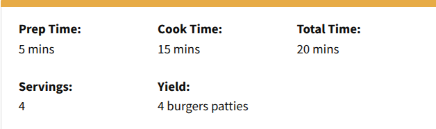
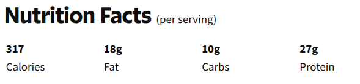

Preheat an outdoor grill for high heat and lightly oil grate.
Step 2.Whisk egg, salt, and pepper together in a medium bowl.
Step 3.Add ground beef and bread crumbs; mix with your hands or a fork until well blended.
Step 4.Form into four 3/4-inch-thick patties.
Step 5.Place patties on the preheated grill. Cover and cook 6 to 8 minutes per side, or to desired doneness. An instant-read thermometer inserted into the center should read at least 160 degrees F (70 degrees C).
Step 6.Serve hot and enjoy!
